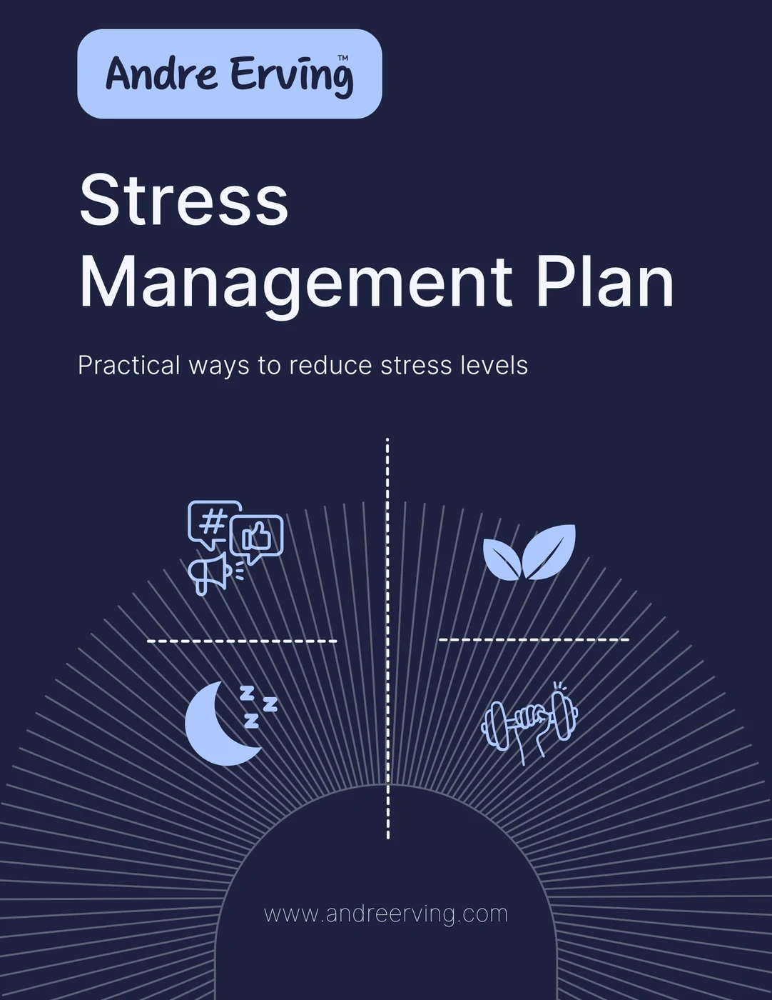
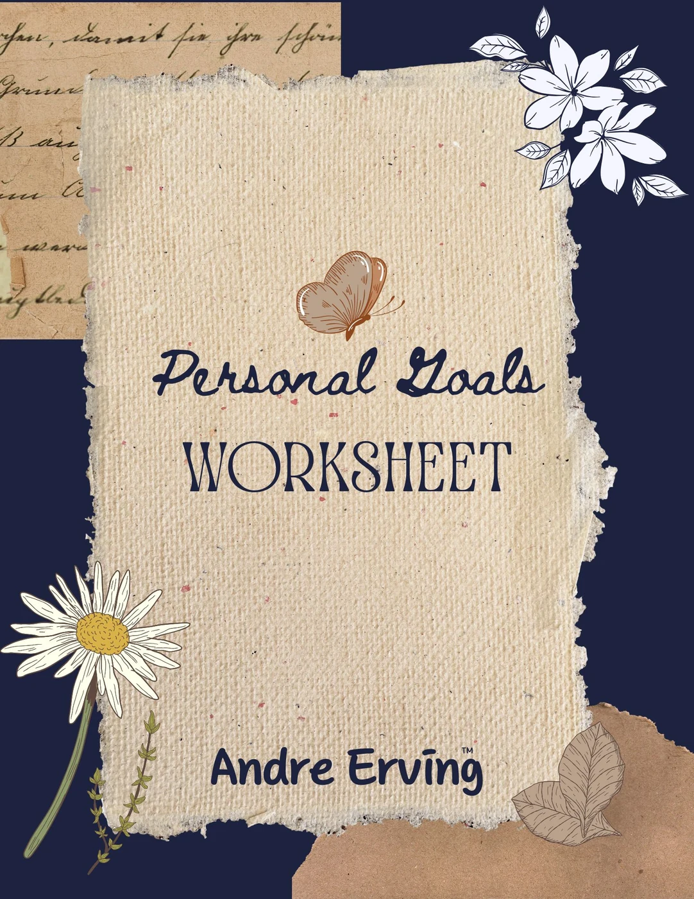

Worksheet
Personal Values Assessment Worksheet
Clarify the values that shape your decisions and use them as a filter for personal and professional growth.
Structured tools for clarifying values, managing stress, and turning goals into a plan you can actually review.
Clarify the values that shape your decisions and use them as a filter for personal and professional growth.

Identify stress triggers, reflect on patterns, and build a practical plan for healthier responses and routines.

Turn broad ambitions into clear priorities, practical next steps, and a structure for tracking progress.